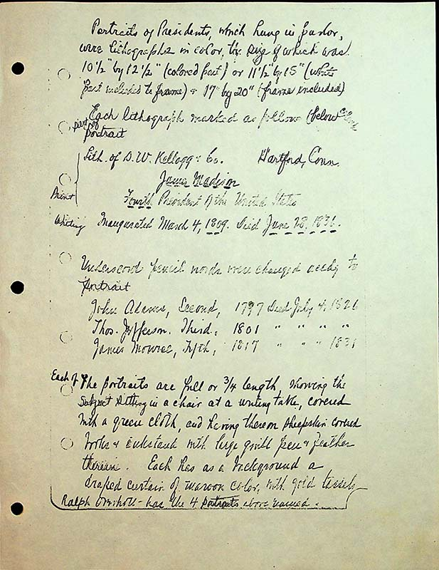

Portraits of Presidents, which hung in parlor, were lithographs in color, the size of which was 10½” by 12½” (colored part) or 11 ½” by 15”(white part included to frame) & 17 by 20 (frame included)
Each lithograph marked as follows below color part of portrait
Lith. of D.W.Kellogg Hartford, Conn
James Madison
, Fourth President of the United States
, inaugurated March 4, 1809. Died June 28, 1836.
Underscore pencil words were changed accdg to
portrait
John Adams, Second, 1797, Died July 4, 1821
Thos. Jefferson, Third, 1801, “ “ “ “
James Monroe, Fifth, 1817, “ “ “ 1831
Each of the portraits are full or ¾ length sitting at a chair at a writing table, covered with a green cloth, and having there on sheepskin covered books & inkstand with large quill pen & feather therein. Each has as a background a draped curtain of maroon color with gold tassels.
Ralph Overholt has the four portraits above named.